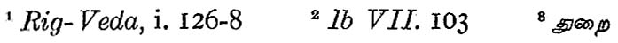
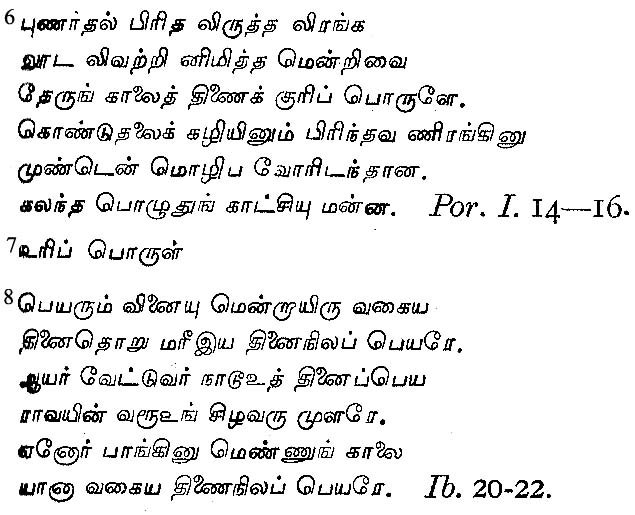
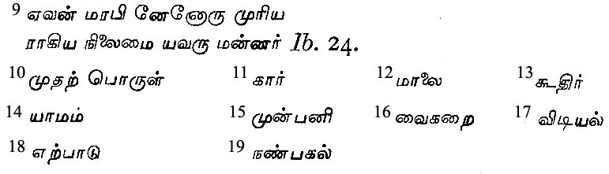
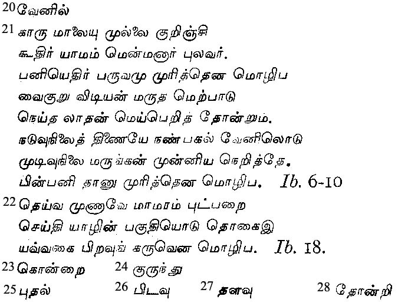
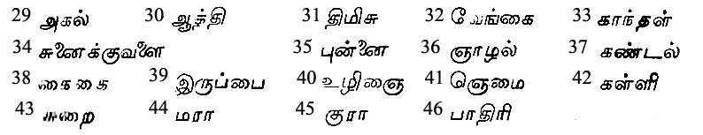
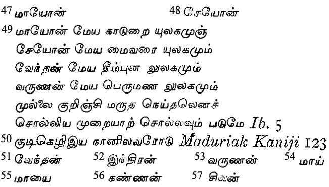
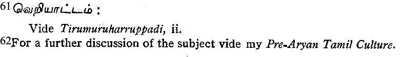
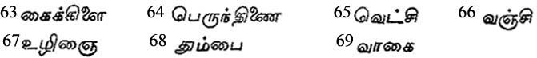
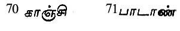

Environment and Culture
By P. T. SRINIVASA AIYANGAR
II
This account of ancient South Indian culture will not be complete without taking note of another great element of human culture. Man is not only a tool-making, cooking, clothing, and speaking animal but also a religious animal. Man alone of the higher animals has, besides inventing fire and tools and speech, also invented methods of invoking or compelling the help of what he conceives as superhuman beings to avoid the real or imaginary evils that threaten him and to secure things he ardently longs for. These methods consisted of religio-magical rituals, the differentiation between religion and magic belonging to later stages of civilization. This religio-magical ritual comprised ritual feasting, ritual singing and ritual dancing. In later times, feasting and singing and the drama became differentiated from each other as secular activities, but this differentiation took a long time to be established. In early times, the Gods and the ritual of their worship were evolved in each region separately and in accordance with the geographical characteristics of that region. A brief account of these will be presently given, derived from the earliest strata of Tamil literature, now available.
Early Tamil literature, like all literature produced in the early ages when scholarship had not begun to quench the inspiration which poets derive from their environment, is a true mirror of the early life of the Tamil people. Neither in poetic form nor in imagery, neither in language nor in art, was it at all influenced by the contemporary Sanskrit culture of North India whose dominant influence on all the departments of life in South India commenced only in historic times, probably about 2000 years ago. Even after that influence of the Sanskrit language and literature began to be definitely exercised, there was a concurrent flow till the sixth century A. D. of two types of literary tradition, the pure, unalloyed ancient Tamil tradition and that which came to be gradually more and more enslaved by Sanskrit literature, in form as well as content. Much of early Tamil poetry has disappeared with the efflux of time, because in early days writing was the handmaiden of business, administrative or mercantile, and it was regarded as a sacrilege to write literature but on the tablets of human memory. Hence it happened that religious literature, like the Vedas, was specially memorised with great care and was preserved for the use of posterity, whereas the earlier Sanskrit secular literature was represented only by stray mantras which have got an incongruous lodging in the Rigveda Samhita, e.g., the remains of an old ribald ballad,1 and the well-known frog-hymn.2 Early Tamil literature being all secular, much of it was also lost as is proved by the fact that the commentators on the Poruladigaram of the Tolkappiyam have been unable to find illustrative examples of many of the turais3, sub-incidents of love and war described in that work. But yet enough of that literature remains to prove that the life and manners of the ancient Tamil people and the literary conventions they evolved were the result of their reaction to their geographical environment and not influenced by historical causes like their contact with their contemporaries outside South India. On account of the unsettlement religious, social, and political, caused by the Mahabharata war, streams of Brahmana monks seeking retirement from the turmoil of life as well as lay Brahmanas inspired by love of adventure, began to pour steadily into South India, One of them, a great scholar trained in the methods of grammatical investigation belonging to the Agastyagotra, not of course the Agastya of the Rigveda hymns, nor even the Agastya of Sri Rama's time, settled in the Podiya hill in the heart of the Pandya country, and the Tamils called him Agattiyanar. He acquired a complete mastery of the Tamil tongue and the then existing Tamil literature. It is the clash of language with language in the minds of scholars that has always led to the investigation of grammatical facts and Agattiyanar composed a grammar of Tamil (using the word grammar in a wide sense so as to include linguistics, rhetoric, and poetics), called Agattiyam. This work is now lost and is represented only by a few quotations scattered in the works of scholiasts (uraiy-asiriyar) of very much later times. Agattiyanar was followed by several generations of grammatical writers, of whom the leading light was Tolkappiyanar. Legend makes Tolkappiyanar the direct disciple of Agattiyanar, but as Tolkappiyanar frequently refers to preceding scholars (pulavar) that preceded him, we may take it that he was removed from Agattiyanar by many generations or that there were scholars before Agathiyanar's time.
Tolkappiyanar was a Brahman settler in Southern India belonging to the Kappiya or the Kavya clan, descended physically or spiritually, from Kavi or Sukra, son of Bhrigu. His treatise is called after him the Tolkappiyam. This work is at the same time a grammar of the Tamil language, a grammar of the life of the Tamil people, and a grammar of the Tamil poetry, developed long before the influence of Sanskrit began to act on Tamil minds. In the last part of this work called the Poruladigaram can be found recorded, the ethnological notions of the Tamil people and their age-long literary traditions based on the geographical conditions of life in the Tamil land.
The Tamil land was for geographical purposes divided into five tinais, and when poetry arose, each region developed its own kind of poems suited to the peculiar condition of life prevalent there, so that tinai came to mean a class of poetry suited to a particular region. As love and war are the human activities that most appeal to poets, poetry was divided into two main divisions, agattinai4, love poetry, and purattinai,5 war poetry, agam, inside referring to the emotional satisfaction which a man cannot share with others and puram, outside, to that which he can. The main incidents in the course of love and the poems which dealt with them were at first considered as five, correlated to the five regions. The incident appropriate to Kurinji was love at first sight and immediate consummation thereof. The romance of the hilly scenery and the possibilities that the kurinji affords to young men and women for meeting in solitude is the reason why poems on this subject appertain to this region. The sturdy mountaineer and the buxom girls of the hilly tracts are more prone to the access of overwhelming outbursts of the passion of love than the weaklings of mullai or the marudam. Palai poems deal primarily with the parting of lovers and also with the parting of the heroine with her relations and friends when she decides to elope with her lover. The desolation of the palai region is appropriate to such parting. The heroine waiting for her lover appertains to mullai, because in pastoral life the woman has to stay at home the live-long day when her man goes out to tend his flock. He may divert himself by making his flute, the kulal, utter sweet music and by observing the beauties of the still calm life around him as well as hearing the love songs of birds and watching the gambolings of his wards. But she has to bear his absence patiently waiting at home and this is fit subject for the mullai poets. In the neydal the separation of the lovers is for longer periods, for the fisherman spends several days on the sea catching fish and his mistress awaits his return, her mind laden with anxiety and the neydal poets depict this. In the marudam after the seed is sown and till the harvest is garnered, men and women have nothing to do; so there is much opportunity for the lovers to get tired of drinking in with their eyes each other's beauty, and there is every temptation for lovers' idle quarrels to break out, causing temporary pain till the quarrel ends with the sweet kisses of reconciliation. These five topics are described by, Tolkappiyanar as the uripporui, the specific topic of the tinais.6
The heroes of each tinai are also uripporui 7 or specific objects. They are the chiefs of the tribes who live in each tinai. The panar sang from early times with an eye to profit and dealt with the love feats of chiefs and not of the ordinary poor men. Says Tolkappiyanar:- "The names of the chiefs of the tinais, (like the names of the tribes living there) are of two kinds, those derived from the nouns and verbs (qualities and actions pertaining to the tinais.) The men of mullai and kurinji are, respectively, herdsmen and hunters, their chiefs are the heroes of the tinais, the women living in these regions are the heroines. Similarly the heroes of the other regions are the chiefs of the tribes living there.8 The names of the tribes (and their chiefs) so briefly referred to by Tolkappiyanar are enumerated in great detail by his commentators who give numerous names of the tribes, all derived from the characteristics and actions peculiar to these regions.
It may be pointed out here that some of the names of these tribes peculiar to the tinais have become caste-names. e.g., kuravar, maravar, paradavar, idayar, vellalar. It is but natural for the inhabitants of the different regions and especially those that followed occupations which prevented their migration from district to district, to develop the custom of endogamy, and endogamy has been the cause of the never-ending process of the fission of the people of India into an endless series of castes and sub-castes. But to Tolkappiyanar, the artificial division of men into four varnas with reference to their duties in the fire-ritual was a matter of sacred tradition; Aryan tradition would restrict the heroship of the poems to the three higher castes and Tolkappiyanar finds it difficult to reconcile this with the Tamil literary convention which requires men from outside the pale of the higher castes to be the heroes of poems. He, therefore, says, the people who according to the Vedas are entitled to command others, that is, the men of the higher caste and others like them are the specific objects (here heroes of the five tinais).9
Besides the urupporui, specific objects, there are the primary topics, mudarpoura10 of the tinais. They are the times and places propitiatory to the five incidents of love. The places are the five regions already discussed. The times suited to the five tinais are described as follows: - The learned say that kar,11 the cloudy season when the sky is black and the evening (malai)12 are suited to mullai, and kudir,13 the cold weather and yamam,14 the middle of the night (to) kurinji. The teacher says that munpani,15 the season of the evening dew, also belongs to kurinji. Vaigarai,16 from 2 p.m., to dawn, and especially vidiyal,17 day break, are appropriate to (lover's quarrels which belong to) marudam, and erpadu,18 afternoon, to neydal. Palai, the tinai that stands in the middle is held to belong to nanpagal,19 the middle of the day, and venil,20 the hot weather.21 The season of the morning dew also belongs to it. How each time is specially propitiatory to the corresponding love incident is so self-evident that the subject need not be discussed here.
One more set of topics (porul) remains and it is that of the seed-topics (karupporul) or essential objects of each tinai. They are the gods, foodstuffs, beasts, trees, birds, drums, occupations, musical instruments, etc., appropriate to each region and the department of poetry pertaining to it.22
Of these seed-topics, Tolkappiyanar enumerates only the gods. The rest are noted by the commentators and are briefly referred to below to show what keen observers of nature the ancient Tamil poets were and how anxious they were to be absolutely true to nature. The food-stuffs peculiar to mullai are the millets and the lentils; the deer, the stag and the hare; the trees, konrai 23, (cassia), kurundu 24 and the tall pudal25 grass; the birds, jungle-fowl and the partridge; the occupations, grazing herds, and the garnering of millets; the amusement, bullracing; the flowers, mullai, which gave its name to the region, pidavu,26 lalavu27 and tonri;28 and the sources of water-supply, the mountain streams.
Appropriate to the kurinji are aivanam, (mountain-paddy), bamboo-rice and tinai; the tiger, the elephant, the bear and the boar; the agil,29. the atti,30 the teak, the timisu31 and the vengai;32 the parrot and the pea-fowl; honey-gathering, collecting tubers, raising the tinai and the extermination of locusts; the kurinji flowers, vengai, kandal33 and the sunaikkuvalai;34 and the mountain streams and tanks. The essential objects of marudam are red rice and white rice; the buffalo and the beaver, the marudam tree, the kanji, and the creeper vanji; the duck, the water-fowl, the swan and the nightingale; sowing paddy, transplanting, weeding, harvesting; bull-racing; the lotus and the red-water lily; and rivers, wells and ponds.
Pertaining to the neydal are the food-stuffs bartered for fish and salt; bullocks and buffaloes carrying bags of salt; the crocodile and the shark; the punnai,35 the nalal36 and the kandal;37 the sea-crow; fishing, salt-manufacture and the sale of fish and salt; the flowers kaidai38 and neydal; and wells in sandy tracts and salt marshes. Suited to palai are foodstuffs resulting from highway robbery and pillage; emaciated elephants, tigers, and wild-dogs; the dried-up iruppai39 tree, the mango, the ulinai,40 the nemai,41 the palai, the kalli,42 and the surai,43; the eagle, the kite, and the pigeon; the occupations, highway robbery and plunder, the flowers mara,44 kura,45 padiri;46 and wells with scant water.
Critics of poetry in all other languages go into hysterics over a poet's reference to a single flower or a solitary bird in its proper milieu. What then should be the meed of praise which ought to be allotted to the hundreds of ancient Tamil panar who so systematically observed the environment of men in each natural region and so accurately described the correlation of human life to its natural suroundings?
There remains yet to discuss the gods of these regions. Says Tolkappiyanar, the regions are in order called mullai, kurinji, marudam and neydal, being respectively, the forest region beloved of Mayon,47 the hilly country favoured by Seyon,48 the world of sweet water desired by Vendan, the world of heavy sand dear to Varunan.
Before discussing the aptness of the gods to the regions, it has to be noted that Tolkappiyanar omits in this enumeration the region of palai. It was an unsettled question with the ancient Tamil thinkers whether the habitable regions were five or four; for the palai is scarcely fitted for permanent occupation by man. Hence though the tinais were always regarded as five, the natural regions were sometimes treated as four and poets called the habitable earth the four-fold land.50
Now to return to the gods. Vendan51 is Indiran52, the god of the rice-land and the king of the gods and Varunan53, the lord of the sea and the sea-coast. Mayon is the god of wonders, whose name is derived from the Tamil root may,54 to be astonished, whence Tamil mayai55 and Sanskrit maya (for which no convincing Sanskrit derivation has been found except the jingle ya ma sa maya) which presupposes a long evolution of high meta-physics before the word was invented. Mayon is Kannan56, beloved of idayar girls, later amalgamated with the historic Krishna, lord of Dvaraka. Seyon is the red god of the hills. The word Sivan57 also means the red-god, translated into Rudra in Sanskrit; but the red god of destruction, garlanded with death-dealing serpents, also the personification of the energy of creation, symbolised by the member of virile energy, the lingam, worshipped from the stone-age onwards, this Sivan was displaced in early poetry by his red-colored son Murugan58 who rode on the serpent killing pea-fowl. Murugan being a hunter god, may be derived from the same root as murudar,59 hunters, (Sanskritized as murunda); or the name as is usually held is from Tamil murugu,60 which means both beauty and youth, for Murugan is Kumara, the beloved boy-god. But are these Aryan gods or Tamil Gods?
Before answering this question, it has to be remarked that modern European investigations of ancient Indian history have thrown the study of Indian theogony into much confusion by their theories of the multiplicity of warring races and rival tribal gods in old India, theories hanging like the sword of Damocles by a single slender (and that, mistaken) hair of evidence; they speak of Aryan gods and non-Aryan gods, northern divinities and southern divinities, competing for popularity, now rivals of each other, then amalgamating with each other and reincarnating in new ways. They speak of Indra as being a deity special to the Aryans of North India, but we find descriptions of worship in early strata of Tamil literature, the mode of his worship being fireless (anagni) and characteristically different from the Aryan mode. They speak of Siva and Vishnu as being originally Tamil gods who were gradually imported into the Vedic pantheon–the latter in the earlier stages of the evolution of Vedic ritual and the former later on. They speak of Varuna as being a foreign deity imported into India because of the equation of Sanskrit Varuna with Greek Ouranaos, an equation since proved to be phonetically impossible. We can see ancient Indian history in proper perspective, only if we keep constantly in mind the following facts derived from a study of the artifacts of early Indian man and the testimony of early Sanskrit and Tamil literature. The bulk of the people of India have been one and indigenous to the soil and not settlers from foreign countries; their culture has progressed from the beginning in a straight line, the rate of progress being different in different times, and sporadic intrusions of foreign tribes and elements of foreign cultures have affected but the outer skin of the life of the people, the fundamental national outlook having been the same throughout the ages.
The different shades of the ancient culture of the Indian people in different parts of the country are different instances of geographical control; they are corresponding reactions of the people to the different kinds of the physical environment and not due to the intermixture of different races at different times. The evidence of the vedic mantras show that there was much intercourse between northern and southern India in the age of the Rishis, and the Arya and Anarya lived the same kind of life and possessed the same kind of culture, their only point of difference being that the former were devoted to the fire-cult, whereas the latter were opposed to it; they worshipped practically the same gods but the Arya offered sacrifices, animal and vegetable, through Agni and with the accompaniment of Sanskrit mantras, but the Anarya was anagni, fireless, and offered the same sacrifices without mantras and without lighting the holy fire. This difference of cult did not constitute a difference of culture, Indian culture being the same throughout India in ancient as in modern times. This is the traditional view of Indian history and the so-called critical modern view is purblind, because it shuts its eyes to all the available literary and other evidence on the subject. We can thus understand that the gods of the tinais were neither specially northern gods nor specially southern gods, they belonged as much to South India as to North India. Each was special only to his own region, because he was conceived and his worship was evolved with reference to the geographical characteristics of his region, and the five regions exist as much in Aryan India as in Tamil India and that on a more magnified scale.
The appropriateness of the gods to their regions in the Tamil country is thus explained by Nacchinarkkiniyar, the commentator of the Tolkappiyam. "The guardians of the cows in the mullai region in order to secure the safety of their herds which yield the material for sacrifice to Mayan, dance the kuravai dance and offer much boiled rice; then he manifests himself. In the kurinji land, Kuravar and others gather and, collecting the materials suited to it, dance the veriyattam61 and then Murugan manifests himself. . . . Indiran is the king of the gods and of the sweet-voiced cloud. The gods easily understand the playful delights of love, such as dancing, singing, and feigned dislikes of lovers. For enjoying the pleasures of the quarrels and subsequent reconciliation’s of lovers, they celebrate the worship of Indiran and invoke him; then he manifests himself. . . .The nulaiyar of the neydal land, when their fishing expedition fails, assemble with their children on the sea-coast, plant there the horn at the shark and bless Varunan; then he manifests himself." This description of the old Tamil forms
of worship shows they were characteristically different from those of the Vedic fire-cult and absolutely aboriginal to Tamil India. The Tamil gods, then, were not imported Aryan Gods but the Gods worshipped by the Tamils from time immemorial, not in the Aryan way of pouring oblations to them on the lighted fire but by following their own fireless method of worship. Hence it is absolutely wrong to hold that the gods of the tinais were adopted by the Tamils after the Aryans had begun to influence the minds of the southerners. 62
With regard to the palai region omitted by Tolkappiyanar, Nachinarkkiniyar says that as palai does not occur independent of the other regions, the four gods of the four other tinais pertain to palai also. But other writers regard the sun-god as the deity of the palai tract; yet others consider that the great mother Bhagavati in one or other of her manifestations is the regnant deity of the palai. Besides the five classes of the Agattinai described above, there are two more called kaikkilai63 and perundinai,64 but they are abnormal manifestations of love, the former being love for an immature girl incapable of returning the passion, and the other being violent love-making. These have nothing to do with geographical causes and need not be further referred to here.
After agam, love, the next subject of poetry is puram, war. That the operations of war depend upon the terrain on which they are conducted is so well-known that it is unnecessary to expatiate on it at length. And they are divided into five according to the five tinais. They are vetchi,65 vanji,66 ulinai,67 tumbai68 all vagai,69 so named, like the five tinais of agam, after the flowers of the region, worn symbolically during the military operations on these regions. In old India, declaration of war invariably preceded actual fight and the old method of the declaration of war was the lifting of the enemy's cattle herded in the kurinji tract and this was done at midnight. Hence vetchi corresponds to kurinjibtinai. Vanji is the expedition into the enemy's territory, next to kurinji, i.e. the mullai region and it occurred in the rainy season. Hence it corresponds to the mullaittinai. Ulinai is the siege of the enemy's forts which were situated in the next region, marudam; as for the marudattinai to which it corresponds, the hour suited to it is the dawn. Tumbai is battle on the open plain. The sandy stretches of the neydal are appropriate to it; battles end in the afternoon and as the heroine weeps for the absence of her lover, so tumbai corresponds to the neydal. Vagai corresponds to palai, because it is associated with the parting of the soldiers from their friends when going to the wars and when after success in wars, they resolve to give up the world and take to the life of the ascetic.
As agam possesses two supplementary tinais, so puram has two additional subdivisions, kanji,70 and padan71 dealing respectively with the transitoriness of the world and the one sided life of the hero for fame. But these have no geographical affiliations and need not be discussed.
We thus see that the investigation of the geographic basis of the evolution of early human life and its culture, social and literary, is more fruitful in results than any other and it has led us to see that: (1) the ancient Tamils were autochthones and progressed from the stage of primitive men through the nomad-hunter, pastoral, and piscatorial stages of culture to the highest–the agricultural, manufacturing, and commercial states–owing to the play of geographical causes, without the help of foreign people; (2) they developed forms of poetry and evolved a literary tradition of their own also without help; (3) they reached conceptions of gods, peculiar to each region, and invented rites of worship without invoking the help of the fire-god, as their northern brethren did, rites which still are observed, notwithstanding later developments of religion owing to the mixture of northern cults with southern ones.
India is frequently called a continent. If the word continent means a portion of land with fixed natural boundaries, India is a continent; but England and Italy have permanent natural boundaries, and would be entitled to the name of continents in this sense of the word. A continent properly means a part of the land-surface of the earth which contains many different countries, each marked off from the others by natural boundaries, like Asia Minor or Persia, or by artificial boundaries, like Canada and the United States of America, separated by an imaginary line of latitude, or again, by ever changing political boundaries, like Germany and France. India then is not a continent, but a country, of vast dimensions for nature has made her so.
It is, therefore, incumbent on the investigators of Indian history not to concentrate their attention merely on the rise and fall of dynasties in different corners of India at different times, all the more so because the growth of the Indian people throughout the ages has been very little influenced by their kings, however magnificent they were for the time being. On the contrary, historians ought to devote their undivided energies to the problem of tracing the growth of the national life, national ideals, national literature, and national art from the earliest times.








